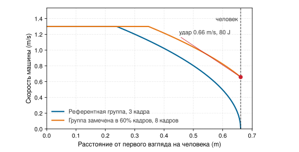
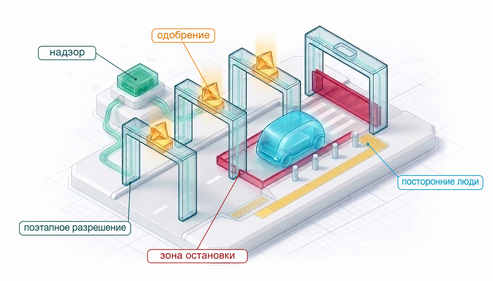
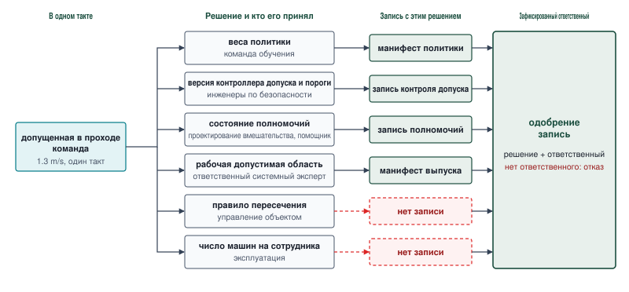
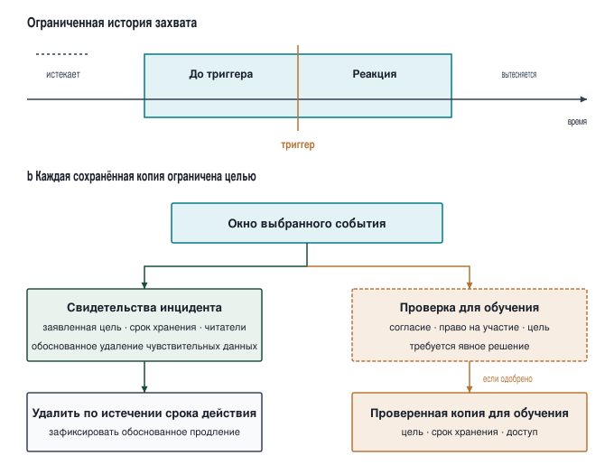

Содержание главы
Содержание
- 17 Ответственный физический ИИ
- 17.1 Кто ответил за столкновение в круизе
- 17.2 Решения, лежащие в основе признанного действия
- 17.3 Надзор, который может совершить человек
- 17.4 Разрешение поэтапно
- 17.5 Когда обнаружение зависит от того, кто обнаружен
- 17.6 Кто несет риск
- 17.7 Данные о людях
- 17.8 Труд, который движет машина
- 17.9 Запись об утверждении
- 17.10 Заблуждения и подводные камни
- 17.11 Резюме
- 17.12 Историческая перспектива и дальнейшее чтение
17 Ответственный физический ИИ

Цель
Кто ответит за машину, которая движется сама по себе, когда ее движение причиняет кому-то вред?
Журналы машины могут показывать, шаг за шагом, что она почувствовала, предложила и признала, но при этом не показать, кто решил, что она может путешествовать с такой скоростью, среди этих людей, с этим человеком в качестве единственной резервной копии. Когда приходит вред, вина ложится на того, кто стоял ближе всего к происшествию, часто оператор поручал работу, которую ни один человек не мог выполнить, в то время как решения, устанавливающие пределы машины, остаются распределенными между инженерными командами, поставщиками, руководителями объектов и регулирующими органами. Эффекты машины также достигают людей, которые никогда ее не выбирали: пешеходов и коллег, уровень обнаружения которых никогда не измерялся для таких людей, как они, рабочих, чья работа заключается в спасении и наблюдении за ней, а также прохожих, чьи лица заполняют записи, которые продолжают объяснять ее ошибки. Машина может быть наделена властью только тогда, когда в каждом решении, лежащем в основе ее действий, указывается человек, который за нее отвечает, каждая человеческая роль, на которую она опирается, является той, которую человек действительно может выполнять, и каждая группа, которая несет ее риск или ее запись, учитывается. Назначение ответственности после столкновения не может вернуть назад энергию, которую машина уже передала через причинную границу, поэтому ее необходимо назначить до того, как машина начнет двигаться.
Цели обучения
- Объясните, почему реконструкция того, что сделала машина, не позволяет установить, кто за это отвечает, и проследите допустимое действие до решений, которые его допустили.
- Оцените, дает ли человеческая роль своему обладателю время, информацию и полномочия для действий, используя бюджет поглощения и использование супервизора.
- Укажите этапы получения разрешения на эксплуатацию, что разрешает и должен сообщать каждый этап, а что отменяет.
- Подсчитайте, как разрыв в покадровом обнаружении между группами людей становится разрывом в тормозном пути и энергии удара.
- Оцените оценку для каждой группы, доверительный интервал которой может устранить пробел обнаружения указанного размера.
- Различать риск, которому подвергаются люди, выбравшие машину, от риска, которому подвергаются люди, которые этого не сделали, и указать отчеты о воздействии для каждой группы.
- Создайте запись об утверждении, в которой будет указан владелец каждого решения, лежащего в основе принятого действия, чтобы отсутствующий владелец блокировал выпуск.
17.1 Кто ответил за столкновение в круизе
Освобождение оставило работающую машину с подписанным манифестом: вердиктом, записями, которые она связывает с помощью дайджеста, и постоянными условиями, которые ее отменяют. В манифесте указан главный системный судья, подписавший его. В нем не упоминается, кто решал, какую скорость прохода будет приемлемой для склада, кто решил, что один удаленный помощник будет обслуживать каждую машину на этаже, или кто будет сообщать об инциденте, кому и как быстро, если машина кого-то повредит. Эти решения определяют то, что делает машина, когда команда пересекает причинную границу, так же уверенно, как и пороговые значения цикла принудительного ограничения, и ни одно из них не появляется в потиковом журнале.
Столкновение Круза в Сан-Франциско в ночь на 2 октября 2023 года показывает, что происходит, когда их оставляют без назначения. Автомобиль, управляемый человеком, сбил пешехода на пешеходном переходе и бросил ее на путь беспилотного роботакси Cruise, который резко затормозил, наехал на нее и остановился. Пока она все еще находилась под ним, автомобиль затем начал движение к обочине и проехал около 20 ft (6.1 m) до 7.7 mph, прежде чем остановился (Quinn Emanuel Urquhart and Sullivan, LLP 2024 г.). Технический сбой относится к пути разрешения. Классификатор после столкновения поместил пешехода сбоку от транспортного средства, а не перед ним, а выбранный им резервный режим работы переместил транспортное средство без каких-либо доказательств того, что пространство под ним свободно.
↩︎ Правило резервного режима работы, запрещающее возобновление движения, пока пространство под автомобилем не проверено, установлено в Раздел 12.9.1.
Собственных записей машины было достаточно, чтобы восстановить это движение. Инженеры, проанализировавшие это событие для бортов компании, восстановили его на основе журналов и видео автомобиля, включая упавшую пешеходную дорожку до удара и пуловер после него (Quinn Emanuel Urquhart and Sullivan, LLP 2024 г.). После столкновения не удалось предоставить отчет людям, выдавшим лицензию на транспортное средство. 3 октября представитель Cruise сообщил по телефону аналитику Комиссии по коммунальным предприятиям Калифорнии (CPUC), что автомобиль остановился при ударе и связался с удаленной помощью; в описании не учтены пуловер и перетаскивание. Позже комиссия насчитала 15 дней, с 3 по 18 октября, в течение которых Круз удержал полный счёт, а 19 октября она получила полное видео (California Public Utilities Commission 2024 г.). В отчетах Круза о ДТП, поданных в Национальное управление безопасности дорожного движения (NHTSA), также не упоминалось затягивание (U.S. Attorney’s Office, Northern District of California 2024 г.). 24 октября Калифорнийский департамент транспортных средств (DMV) приостановил действие разрешений Cruise на испытания и внедрение беспилотных автомобилей, сославшись среди причин на то, что компания исказила информацию, связанную с безопасностью ее автономных технологий (California Department of Motor Vehicles 2023 г.). Проверка, проведенная по заказу совета директоров Круза, не обнаружила никаких доказательств того, что кто-либо намеревался ввести в заблуждение регулирующих органов, но в ней описывался «пассивный, непрозрачный подход» к раскрытию информации и руководство, сосредоточенное на исправлении освещения катастрофы в СМИ (Quinn Emanuel Urquhart and Sullivan, LLP 2024 г.).
Каждая участвовавшая группа имела в своем распоряжении одну часть результата: инженеры, разработавшие классификатор и резервный режим работы, персонал удаленной помощи, люди, составлявшие отчеты, и руководители, управлявшие реагированием. Каждый мог правдиво описать свою часть, и ни одно из этих описаний не говорило, кто решил все. CPUC предоставил Cruise коммерческие услуги беспилотного транспорта в Сан-Франциско в любой час семь недель назад (California Public Utilities Commission 2023 г.). Журналы ответили, что делала машина. Они не ответили, кто решил, что беспилотное транспортное средство должно останавливаться после бокового удара, не заглянув под себя, кто решал, что будут говорить регулирующие органы, или кто отвечал за каждое из этих решений. Пятью годами ранее, после того как тестовый автомобиль Uber сбил пешехода в Темпе, в суде ответил дублирующий оператор автомобиля, который признал себя виновным в создании угрозы в 2023 году (Maricopa County Attorney’s Office 2023 г.).
Поэтому ответственность за физическую машину должна быть спроектирована так же, как и любая другая предпосылка ее полномочий: записана до того, как машина начнет двигаться, привязана к решениям, устанавливающим ее пределы, и проверена при ее освобождении. Те же вопросы возникают и на складской машине без дороги общего пользования. Удаленный помощник отвечает за захваты, руководство объекта отвечает за правила перехода, не допускающие людей в проход, группа данных для камеры отслеживает черный ящик, а кто-то, пока неназванный, за решение, что один человек может наблюдать за каждой машиной на этаже. В последующих разделах эти решения принимаются по очереди: связи, лежащие в основе одного допустимого действия, человеческие роли, на которые опирается конструкция, этапы разрешения на эксплуатацию, выявление различных групп людей, люди, которые несут риск машины и фигурируют в ее записях, а также рабочая сила, которую она перемещает, а не удаляет. Запись об утверждении собирает эти решения в одном месте, которое считывается шлюзом, так что решение без имени владельца блокирует работу, как это делает неизвестная предпосылка.
17.2 Решения, лежащие в основе признанного действия
Рассмотрим одну команду, которую контур принудительного ограничения допускает в проходе: базовую скорость 1.3 m/s по направлению к концу стойки. Отчет о правоприменении показывает, что он прошел проверку на остановку на этом этапе, ниже действующих пороговых значений, однако за этой единственной строкой журнала стоят как минимум шесть решений, принятых разными людьми в разное время. Четыре из них оставляют следы в инженерных записях, созданных в предыдущих главах. Группа обучения обучила и утвердила веса политики, предложенные командованием. Команда инженеров по безопасности построила и подписала контур принудительного ограничения и его пороговые значения. Схема вмешательства и удаленный помощник на смене устанавливают состояние полномочий на этом уровне. Главный эксперт по системам подписал операционный пакет в манифесте выпуска, включая скорость в проходе и предпосылку о трении пола под ним. Два других решения управляют местом, а не машиной: руководство предприятия написало правило перехода, которое позволяет людям входить в проход только в отмеченных точках, а операторы решали, сколько машин будет обслуживать один удаленный помощник. Рисунок 1 рисует шесть ссылок и запись, если таковая имеется, содержащую каждую из них.
↩︎ Главный системный судья, чья подпись связывает вердикт об освобождении с указанным лицом, назначен в Раздел 16.4.

Когда каждое из этих решений принадлежит разным сторонам, каждая сторона может честно сказать, что вред был причинен чьей-то другой стороной. Томпсон назвал это проблемой многих рук в своем исследовании государственных чиновников, где ответственность за политику, которую сформировали многие люди, в конечном итоге не лежит ни на ком (Thompson 1980 г.). Ниссенбаум показал, что компьютерные системы усугубляют ситуацию: они создаются многими людьми, они выходят из строя так, как ни один человек не виноват, и их сбои легко оправдать ошибками, которые никто не мог предотвратить (Nissenbaum 1996 г.). Учёный, предлагающий, добавляет ещё одно оправдание. Его поведение было изучено, а не записано, поэтому ни один инженер не написал правило, которому оно следовало, и Маттиас утверждал, что машины, которые обучаются, создают реальный разрыв в том, кто может нести ответственность за то, что они делают (Matthias 2004 г.). Архитектура этой книги закрывает этот пробел там, где это важно. Модель предлагает и никогда не допускает (принцип 1), поэтому каждое допустимое действие проходит проверку, которую кто-то разработал, под конвертом, который кто-то подписал, и фраза «модель сделала это» никогда не является полным ответом.
17.2.1 Решения, которые не оставляют следов в журнале
Когда следователь инцидента открывает журналы времени выполнения машины, решения, которые сделали инцидент возможным, отсутствуют, поскольку эти журналы фиксируют только события времени выполнения: наблюдение и его возраст, предложение, признание, смену власти или испытание ошибки. Выбор, который сформировал эти события, был сделан за несколько недель или месяцев до этого на встречах и в документах, задолго до того, как командование пересекло причинно-следственную границу. Инженер по технике безопасности утверждает рабочий диапазон, операционный менеджер устанавливает штатное расписание, группа отключает защитную функцию, компания подает заявку на получение разрешения, а группа обработки данных заявляет, для чего могут быть использованы следы ее камер. В случае с Крузом правило, согласно которому боковой удар должен вызывать пуловер, было проектным решением, принятым задолго до 2 октября, а решение о том, что сообщить регулирующим органам, было принято спустя несколько дней. Ни то, ни другое не могло появиться в журнале автомобиля, поскольку машина их не создавала.
Такие решения приходится специально фиксировать, и цепочка из них менее полна, чем любое из ее звеньев. Предположим, что каждая из ссылок 6, стоящих за командой прохода, может быть получена, когда следователь задает вопрос с вероятностью 0.99, независимо от других. Вся цепочка тогда разрешается с вероятностью
↩︎ Конъюнктивная арифметика, которая делает аргумент не более сильным, чем его самая слабая посылка, установлена в Раздел 16.3.2.
Эти ссылки хранятся в блоке решений записи утверждения (раздел 17.9). Для каждого решения указывается тип решения, роль, которой оно принадлежит, подписанное утверждение, доказательства, на которые оно опиралось, и дата, после которой оно должно быть принято снова. Связка без владельца – это не пробел в документах; это предпосылка авторитета машины, которую никто не принял. Однако даже если у каждой ссылки есть поименованный владелец, многие из этих разрешений основаны на еще одной предпосылке: человек-оператор в цикле может вмешаться, когда собственный кейс машины закончится.
17.3 Надзор, который может совершить человек
Упоминание человека-оператора в этой цепочке принятия решений, будь то водитель безопасности за рулем, удаленный помощник за консолью или наблюдатель, идущий рядом с роботом во время ввода в эксплуатацию, часто перекладывает вину на этого человека, не добавляя никакой реальной защиты. Человек, находящийся в курсе, обеспечивает настоящий надзор только при соблюдении трех условий: у человека должно быть время действовать до того, как возникнет опасность, информация, позволяющая понять, что делает машина, и полномочия изменять то, что она делает, а не только сообщать об этом. Сантони де Сио и ван ден Ховен формулируют одно и то же требование в двух частях: система должна реагировать на мотивы людей, призванных контролировать ее, и каждый результат должен быть прослежен до кого-то, кто понял и систему, и свою собственную роль в ней (Santoni de Sio и Hoven 2018 г.).
Определение 17.1: Роль человеческого надзора
надзорная роль человека — это обязанность, которую конструкция возлагает на человека, например, остановка машины, захват канала или одобрение движения, и на которой основывается аргумент безопасности. Роль считается контрмерой только в том случае, если ее обладатель имеет время, информацию и полномочия для ее выполнения в течение времени, когда опасность исчезнет.
- Значимость: Роль, не удовлетворяющая любому из трёх условий, не добавляет защиты, но возлагает вину на человека, который её выполняет, поэтому каждая роль, указанная в обосновании безопасности, должна быть проверена, как и любая другая предпосылка.
- Различие: Бюджет поглощения измеряет, сколько времени нужно человеку; роль надзора спрашивает, оставляет ли дизайн столько времени, дает этому человеку то, что ему нужно увидеть, и позволяет ему действовать в соответствии с этим.
- Распространенная ошибка: Частое заблуждение состоит в том, что добавление человека в цикл делает дизайн ответственным. Человек, который не может действовать вовремя, — это место, на которое можно возложить вину, а не слой безопасности.
Когда роль не соответствует любому из этих условий, человек в ней берет на себя ответственность за контроль, которого у него никогда не было. Элиш называет человека в таком положении зона морального разрушения. Подобно зоне смятия автомобиля, человек поглощает удар, за исключением того, что здесь виноват удар, а смятие защищает репутацию системы, а не человека (Elish 2019 г.). Эти три условия дают команде разработчиков тест, который она может применить перед тем, как машина начнет движение.
17.3.1 Время действовать
Время – это условие, которое чаще всего нарушается, и его легче всего проверить. При скорости прохода 1.3 m/s человек, выходящий на 1.10 m впереди машины, уходит на 0.85 s до конца стойки. Удаленному помощнику, который контролирует, а не управляет автомобилем, требуется около 4.5 s, чтобы взять на себя управление, то есть расчетное время внеконтурного переключения, в течение которого машина перемещается 5.8 m. Человеку нужно около 5× времени, когда опасность исчезнет. Никакое обучение, внимание или усердие не закроют брешь такого размера, поэтому конструкция, в которой удаленный помощник называется мерой противодействия человеку, выходящему из конца стойки, не добавила уровня защиты. Там заранее записано, кто будет виноват.
↩︎ Время внеконтурного переключения и его стоимость в бюджете остановки устанавливаются в Раздел 14.2.2.
Инженерное следствие уже заложено в дизайне книги. Машина останавливается первой и обращается за помощью из состояния покоя, тогда как ожидание требует времени, а не расстояния. Тест на время добавляет обязанность записать этот выбор. Для каждой человеческой роли, на которую опирается обоснование безопасности, в записи об утверждении указывается время реакции, необходимое для этой роли, время устранения опасности и вердикт FEASIBLE, INFEASIBLE или UNKNOWN. Роль, отмеченная INFEASIBLE, может оставаться в проекте как ресурс производительности; оно может не фигурировать в аргументах безопасности в качестве контрмеры.
17.3.2 Один человек, много машин
Удаленный помощник, который обслуживает множество машин, — это сервер в очереди, и теория очередей говорит, насколько занят этот человек. Если запросы на помощь поступают от всего парка со скоростью
Инженерный расчёт 17.1: Один помощник, двадцать станков
Проблема: На сайте планируется запустить 20 мобильные манипуляторы с одним удаленным помощником. Каждая машина обращается за помощью 0.5 раз за час работы, и каждый запрос удерживает помощника в среднем 3 min. Насколько занят помощник и как долго ждет запрос?
Переменные:
- Запросов на машину: 0.5 за час работы (иллюстративно); среднее время обслуживания
180 s (иллюстративно). - Обслуживаемые машины: 10, 20 или 32 (иллюстративно).
Математика: По уравнение 1, 20 машины выдают
Результат: Ассистент занят 50 percent времени, а обычный запрос ожидает несколько минут. Добавление машин после этого момента приводит к тому, что ожидание растет намного быстрее, чем парк машин.
Системное понимание: Каждое из этих ожиданий длится дольше, чем 0.85 s человек, выходящий из конца стойки, уходит. Таким образом, соотношение машин и помощников является бюджетом производительности, а не уровнем безопасности. Штатное расписание, которое ограничивает использование на уровне 0.5, ограничивает этого помощника машинами 20, и в протоколе утверждения это ограничение указано как решение того, кто его установил.
↩︎ Запас расстояния на сеанс удаленного помощника только тогда, когда машина находится в состоянии, когда ожидание требует затрат, в Раздел 14.4.6. не установлено свободное расстояние.
Очередь показывает, почему соотношение кадров – это решение, которое кто-то должен принимать самостоятельно. Менеджер, добавляющий машины к нагрузке одного помощника, не меняет число в электронной таблице; этот менеджер решает, как долго застрявшая машина и люди, работающие вокруг нее, будут ждать человека. Если это решение записано с указанием предполагаемого использования и владельца, его можно будет пересмотреть, когда парк увеличится. Если это не так, он автоматически меняется каждый раз при добавлении машины.
17.3.3 Информация и полномочия
Время необходимо, но недостаточно. Человек, у которого есть время действовать, также должен знать, что делает машина, и иметь возможность это изменить. Консоль, на которой отображается изображение с камеры, но не указано, какой канал все еще принадлежит машине, заставляет оператора гадать о наиболее важном факте передачи, а оператор, который считает, что он удерживает канал, которым он не владеет, может усугубить захват. Роль, единственным результатом которой является отчет, флаг, поднятый руководителю, или запись в журнале, не дает ее обладателю вообще никаких полномочий в отношении движения. Проверка авторитета является механической. Человек должен иметь возможность остановить машину через канал, который учитывает путь разрешения, в течение времени, когда опасность исчезнет, не спрашивая никого другого.
↩︎ Смешение режимов и поканальное оповещение, которое сохраняет для оператора представление о том, кому принадлежит каждый текущий канал, установлены в Раздел 14.6.
Таким образом, для каждой человеческой роли запись утверждения содержит три поля помимо временного вердикта: канал информации, который человек читает, канал полномочий, через который человек может действовать, и достигает ли этот канал пути разрешения. Удаленный помощник на работающей машине проходит тесты на информацию и полномочия для остановившейся машины и не проходит тест на время для человека, выходящего из стойки. Оба факта подлежат регистрации, поскольку они возлагают на одного человека две разные обязанности.
Контрольная точка 17.1: Надзор, который может осуществлять человек
В качестве аргумента в пользу безопасности в конструкции упоминаются три человека: удаленный помощник, оператор-подвеска для обучения во время ввода в эксплуатацию и начальник цеха, наблюдающий за приборной панелью автопарка.
17.4 Разрешение поэтапно
Предоставление полного разрешения на эксплуатацию машины в первый же день подвергает опасности общественность или персонал до того, как конфигурация накопит доказательства, необходимые для подтверждения этой уязвимости. Поэтому регулирующие органы беспилотных транспортных средств выдают разрешение поэтапно. Правила Калифорнии разделяют тестирование с участием водителя-безопасника, тестирование без него и публичное тестирование, каждое из которых имеет свое собственное разрешение и условия (California Department of Motor Vehicles 2018 г.a, 2018 г.b). CPUC добавляет вторую лестницу для перевозки пассажиров. До августа 2023 года Cruise мог перевозить платных пассажиров без водителя-безопасника только в ограниченных районах Сан-Франциско с 22:00. и 6 утра, мог перевозить платных пассажиров в любую точку города в любое время только в присутствии водителя-безопасника и мог предоставлять бесплатные поездки без водителя в любое место в любое время. 10 августа 2023 г. комиссия сняла ограничение по времени для беспилотных тарифов (California Public Utilities Commission 2023 г.). Каждая ступенька называла конфигурацию, место, время и тех, кто мог находиться на борту.
Определение 17.2: Стадия разрешения
стадия разрешения — это грант, предоставляемый стороной, имеющей право на его предоставление, который позволяет именованной конфигурации машины работать в именованном домене, среди поименованных групп людей, на основе поименованных доказательств и в соответствии с поименованными обязанностями по отчетности. Машина переходит на следующий этап только на основании доказательств, собранных на текущем, а этап может быть отменен из-за изменения конфигурации, инцидента или скрытой записи.
- Значимость: Уровень риска увеличивается по одному этапу за раз, поэтому доказательства для следующего этапа собираются под защитой текущего, и сбой на одном этапе стоит только того, что раскрывает этот этап.
- Distinction: Вердикт выпуска — это инженерное решение о том, поддерживаются ли утверждения конфигурации; этап разрешения — это грант, который решает, кто может получить доступ к этой конфигурации и что о ней следует сообщать.
- Распространенная ошибка: Частое заблуждение состоит в том, что достигнутая стадия принадлежит компании. Он принадлежит к конфигурации и несет в себе обязанности, которые в случае нарушения приводят к его отмене.
На каждом этапе предусмотрены обязанности по отчетности, и эти обязанности растут вместе с этапом. Калифорния требует, чтобы производитель, проводящий испытания на дорогах общего пользования, сообщал в установленной форме в течение десяти дней о любом столкновении, которое приводит к повреждению, травме или смерти, а также подавал ежегодный отчет о каждом отключении, каждой передаче управления от автоматизации водителю, обеспечивающему безопасность (California Department of Motor Vehicles 2018 г.a). С 2021 года федеральный приказ требует от компаний, эксплуатирующих автоматизированные системы вождения, сообщать о авариях в NHTSA. Согласно версии, действующей в 2023 году, о ДТП, повлекшем за собой смерть, травму, оказанную в больнице, или пешехода или другого уязвимого участника дорожного движения, необходимо было сообщить в течение одного дня с обновлением через десять дней (National Highway Traffic Safety Administration 2021 г.). Отчеты о разъединении представляют собой данные, лежащие в основе Рисунок 1, две серии которых взяты из двух разных этапов: тестирование с драйвером и тестирование без него.
У склада нет государственной разрешительной службы, но есть та же лестница. Машину вводят в эксплуатацию, рядом с ней идет корректировщик, затем ему разрешают работать без присмотра в зоне, в которую люди не могут войти во время ее работы, и только затем выпускают на открытый пол среди рабочих. Владелец объекта, интегратор и представители работников предоставляют эти этапы, а также имена записей об утверждении, кто предоставил каждый из них, для какой конфигурации, на каких доказательствах и с какими обязанностями по отчетности. Стадия и приговор записываются отдельно. В приговоре COND об ограниченной доставке по проверенному маршруту говорится, что утверждения подтверждаются доказательствами; на сцене говорится, может ли эта ограниченная услуга работать на открытом пространстве.
17.4.1 Уход со сцены по уликам
Этап остается на доказательствах, а не на календарной дате, и доказательства, которые производит более низкий этап, частично скрыты защитой, которую обеспечивает этот этап. Водитель-безопасник или корректировщик маскирует неудачи: когда человек вмешивается, собственная ошибка машины никогда не достигает своих последствий, и сцена фиксирует вмешательство, а не столкновение. Таким образом, подсчет отказов на контролируемом этапе означает восстановление для каждого вмешательства того, вышла ли бы машина из строя без него, поэтому отчеты об отключении имеют большое значение и почему в них должно быть указано, почему управление было передано.
↩︎ Вмешательства, которые завершают исследование до того, как станет известен его результат, и порядок их подсчета установлены в Раздел 7.6.
Арифметика воздействия определяет продолжительность этапа. При границе воздействия Пуассона с нулевым отказом, равной Раздел 7.9, исключение уровня вмешательства с 95-процентной достоверностью при нулевых наблюдаемых событиях требует воздействия
17.4.2 Вывод и раскрытие
Разрешение отзывается в порядке его выдачи, поэтапно. Приказ DMV от октября 2023 года приостановил действие разрешений Cruise на испытания и развертывание беспилотных автомобилей, но оставил в силе разрешение на испытания с водителем-безопасником (California Department of Motor Vehicles 2023 г.), что отодвинуло компанию вниз по лестнице, а не с нее. Основания, на которые ссылается DMV, показывают, что защищает разрешение. Одним из них было то, что транспортные средства не были безопасны для общественной эксплуатации, как было установлено в ходе движения. Другой вывод заключался в том, что компания исказила информацию, связанную с безопасностью ее технологий, - это вывод о записи.
Последовавшие за этим штрафы со стороны регулирующих органов были для протокола. CPUC подсчитал 15 дней, в течение которых у него не было полного счета, применил дневной максимум $7,500 к каждому и оштрафовал Круза на $112,500 (California Public Utilities Commission 2024 г.). В сентябре 2024 года NHTSA наложило постановление о согласии со штрафом в размере 1,5 миллиона долларов за отчеты о катастрофах, в которых не было перетаскивания (National Highway Traffic Safety Administration 2024 г.). В ноябре 2024 года Круз заключил соглашение об отсрочке судебного преследования и заплатил уголовный штраф в размере 500 000 долларов США за предоставление ложных сведений с целью повлиять на федеральное расследование (U.S. Attorney’s Office, Northern District of California 2024 г.). Регулирующие органы лишили компанию полномочий из-за того, что сделало ее транспортное средство, и из-за того, что компания им о нем не рассказала.
обязанность по раскрытию инцидента — это обязательство, прилагаемое к разрешению на эксплуатацию, полностью и своевременно сообщать о происшествии сторонам, указанным в разрешении. Это решение принимает владелец, как и любое другое: кто-то решает, что содержит отчет об инциденте, кто-то подписывает его, а кто-то решает, когда запись задерживается достаточно долго, чтобы нарушить разрешение. Таким образом, в блоке разрешений протокола утверждения для каждого этапа перечислены регулирующий орган или лицо, предоставляющее право, конфигурация, которую охватывает этот этап, обязанности по отчетности с указанием их сроков, а также журнал раскрытия каждого отправленного отчета с указанием его автора и приложенных доказательств. Манифест выпуска, который связывает необработанные трассировки с создавшей их конфигурацией и который может открыть оценщик, является инженерной половиной этой задачи. Журнал раскрытия информации — это вторая половина, поскольку он показывает, что на самом деле было отправлено, кому и когда. Однако, как только машина выходит на сцену с открытым полом среди коллег или пешеходов, ее безопасность зависит от предпосылки датчика, которую могут скрыть совокупные часы выхода со сцены: видят ли ее детекторы каждую группу людей на своем пути одинаково хорошо.
↩︎ Манифест выпуска, который связывает необработанные трассировки с создавшей их конфигурацией, установлен в Раздел 16.8.
17.5 Когда обнаружение зависит от того, кто обнаружен
Машина, которая получает разрешение на открытое пространство по совокупным показателям обнаружения препятствий, все равно может систематически выходить из строя в определенных группах людей, находящихся в проходе или на проезжей части. Буоламвини и Гебру обнаружили, что коммерческие системы анализа лиц ошибочно классифицировали темнокожих женщин гораздо чаще, чем светлокожих мужчин, и что критерии, используемые для их оценки, включали мало людей, с которыми они потерпели неудачу (Buolamwini и Gebru 2018 г.). Обнаружение пешеходов демонстрирует ту же картину. Уилсон, Хоффман и Моргенштерн аннотировали пешеходов в наборе данных о вождении по типу кожи и обнаружили, что стандартные детекторы достигают средней точности 67,1 процента для светлокожих пешеходов и 55,9 процента для темнокожих при строгом критерии перекрытия. Время суток и окклюзия не объясняют разрыв (Wilson и др. 2019 г.). Тестируя широко используемые детекторы пешеходов, Ли и его коллеги обнаружили, что доля детей, оставшихся незамеченными, на 20,14 процента выше, чем у взрослых, а также значительная гендерная предвзятость в ночное время (Li и др. 2025 г.).
На складе есть свои группы. Детектор, настроенный в основном на людей, идущих прямо, позже или реже может обнаружить стоящего на коленях рабочего, человека, несущего коробку, скрывающую туловище, пользователя инвалидной коляски или рабочего без жилета повышенной видимости. Если машина полагается только на сертифицированный сканер безопасности, который останавливается при обнаружении любого объекта, превышающего его разрешение, не решая, что это такое, эти различия не имеют значения. Они имеют значение везде, где в конструкции используется обученный детектор для распознавания человека: замедление движения, когда человек находится рядом, сохранение более широкого расстояния от людей, чем от поддонов, или прогнозирование того, куда человек будет идти. В этих местах разница в обнаружении становится разницей в том, насколько близко машина подходит к каждой группе, прежде чем начать тормозить.
17.5.1 От пробела в обнаружении до остановки
Когда детектор видит одну группу людей менее надежно, чем другую, бюджет остановки должен предусматривать большее количество поездок до обнаружения. Остановка, рассчитанная только для группы, обнаруживаемой лучше всего, может затем оставить недостаточный тормозной путь для другой группы. Преобразование скорости обнаружения в останавливающий недостаток происходит через кадры камеры. Предположим, что конструкция требует, чтобы вероятность пропустить человека в каждом кадре окна была не более
Инженерный расчёт 17.2: Опоздание на два кадра
Проблема: Бегущая машина замедляется рядом с людьми только после того, как ее обученный детектор сообщает о человеке. Размер его остановки соответствует группе, которую детектор видит в 95 percent кадрах. Вторая группа, стоящие на коленях рабочие, видна на кадрах 75 percent. Если обнаружение происходит в конце разрешенного окна каждой группы, какую скорость удара и энергию получит вторая группа от остановки, которая только что преодолела бы первую?
Переменные:
(Выбранный); 0.95 и 0.75 (иллюстративно). 16.7 ms (Техническое описание навигационной камеры); 1.3 m/s (Выбранный); 2 m/s² (иллюстративно); 368 kg (Произведено, загружено).
Математика: По уравнение 3 первой группе нужны кадры 3, а второй 5, поэтому
Результат: В этом граничном случае остановка, спроектированная так, чтобы заканчиваться недалеко от стоящего рабочего, заканчивается контактом с стоящим на коленях работником в точке 0.42 m/s.
Системное понимание: Несколько сантиметров позднего обнаружения становятся столкновением, поскольку размер остановки был установлен без запаса для более медленной группы. Результат также предполагает, что промахи детектора независимы от кадра к кадру; детектор, который систематически терпит неудачу в позе, пропускает ее во многих кадрах подряд, и недостаток выходит далеко за пределы этого лучшего случая.
Таблица 1 повторяет расчет для трех групп с более низким уровнем обнаружения. На нижнем уровне связь крутая: группа, видимая в 60 percent кадров, нуждается в 5 дополнительных кадрах и получает 0.66 m/s воздействие, несущее 80 J. Рисунок 2 отображает скорость машины в зависимости от расстояния для контрольной группы и для этой группы.
| Покадровое обнаружение | Необходимы кадры | Дополнительные кадры | Потерянное расстояние | Скорость удара | Энергия удара |
|---|---|---|---|---|---|
| 0.95 (ссылка) | 3 | 0 | 0 mm | 0 m/s | 0 J |
| 0.85 | 4 | 1 | 22 mm | 0.29 m/s | 16 J |
| 0.75 | 5 | 2 | 43 mm | 0.42 m/s | 32 J |
| 0.60 | 8 | 5 | 108 mm | 0.66 m/s | 80 J |
17.5.2 Размеры выборки для каждой группы
Пробелом в обнаружении можно управлять только в том случае, если его можно измерить, а для его измерения по группе требуется больше данных, чем для измерения в целом. Предположим, что оценочный набор содержит 10,000 людей, из которых 2 percent принадлежат к меньшей группе, 200 человек, и детектор находит 0.95 обеих групп. Точный 95-процентный интервал для большей группы простирается от 0.945 до 0.954. Для меньшей группы он простирается от 0.910 до 0.976, примерно на 8× шире, слишком широко, чтобы отличить уровень обнаружения 0.95 от одного из 0.92. Объединенный уровень обнаружения, указанный для «пешеходов» или «рабочих», скрывает именно ту группу, которую машина обслуживает хуже всего.
↩︎ Точная биномиальная граница и причины ее резкого снижения в некоторых наблюдаемых сбоях установлены в Раздел 7.6.1.
Чтобы определить уровень обнаружения 0.95 от одного из 0.92 с мощностью 80 percent, требуется около 1,059 человек в каждой группе, около 11 percent всего набора оценок для каждой группы, которую должна решить оценка. Группа, составляющая несколько процентов сотрудников сайта, не достигнет этого числа случайно; оценка должна привлечь его сознательно. Та же самая арифметика определяет, как долго должен продолжаться полевой мониторинг, прежде чем можно будет доверять уровню обнаружения по каждой группе, и именно поэтому размер выборки для каждой группы должен быть указан в плане до начала сбора данных, а не в отчете после него.
17.5.3 Где живет измерение
Если показатели обнаружения по группам указаны только в отчете об исследовательских тестах, ворота выпуска не смогут проверить их перед выпуском машины на открытый этаж. Для их отслеживания не требуется новый конвейер; необходимо новое измерение в записях, которые уже хранятся в книге. В контракте на наблюдение указывается квалификация обнаружения для каждой группы, для которой машина должна замедлиться. Список ошибок добавляет измерение охвата, которое выделяет людей, стоящих на коленях, несущих и сидящих, так же намеренно, как и устаревшие кадры. Запись оценки сообщает об обнаружении для каждой группы с ее доверительным интервалом, а не только в совокупности. На основе этих квалифицированных измерений в блоке воздействия протокола утверждения сохраняются для каждой группы, на которую машина рассчитывает обнаружение, размер выборки, частота, ее интервал и сокращение расстояния, которое это подразумевает при рабочей скорости. Группа, в которую нет входа, является неизвестной предпосылкой, и ворота выпуска рассматривают ее как единую.
↩︎ Контракт на наблюдение, в котором указано, на что можно положиться в каждом измерении, заключен в Раздел 8.8.
Контрольная точка 17.2: Пробелы в обнаружении и размеры выборки
17.6 Кто несет риск
Люди, которым машина подвергает риску, — это не только люди, которые ее выбрали. Оператор объекта решил купить машину, а интегратор выбрал, как ее настроить; гонщик решает воспользоваться роботакси. Пешеход на пешеходном переходе, коллега на переходе между рядами и посетитель, проходящий через зону погрузки, не сделали такого выбора. Совокупное сравнение, такое как уровень травматизма в автопарке по сравнению с человеческим показателем, может улучшиться, в то время как остающийся риск концентрируется на людях, которые никогда не соглашались его нести. Риск, который несут такие люди, не выбрав его, составляет риск без согласия, и его необходимо учитывать отдельно, поскольку ни одна совокупная цифра его не отражает.
↩︎ Частота аварийных ситуаций флота, о которых сообщается, исход за исходом, каждый со своим интервалом, установлена в Раздел 16.9.6.
Решения, которые выглядят чисто операционными, устраняют этот риск. Правило пересечения проезжей части, которое позволяет людям входить в проход только в отмеченных местах, позволяет машине выиграть скорость, требуя от пешеходов подождать и подчиниться. Предположим, что 80 percent столкновений между машинами и людьми происходит на трёх перекрестках, используемых 10 percent рабочей силой. Эти работники тогда несут 8× среднее воздействие сайта на человека, в то время как все остальные несут 22 percent этого, и уровень встречаемости по всему сайту в любом случае выглядит одинаково. Маршрутизация, границы рабочей области и часы работы машины — все это влияет на группы одинаково.
↩︎ Правила пересечения участка и ограничения доступа пешеходов установлены в Раздел 16.4.1.
Следующее требование является требованием отчетности. В блоке подверженности записи об утверждении перечислены все группы, подвергшиеся воздействию машины, указано, выбрали ли ее участники такое воздействие, как измеряется их воздействие (встречи на человеко-час, близкие промахи, закрытые проходы), а также решения по маршрутизации и домену, которые изменили его. Группа, которая несет риск, который она не выбрала, обязана двумя вещами, которые не может дать ей статистика по всему автопарку: измерение собственного риска и способ предвидеть приближение машины.
17.6.1 Разборчивое намерение
Люди защищаются от движущейся машины, предсказывая, куда она пойдет, и уступая дорогу. Тем не менее, машина, которая до последнего момента следует по эффективному пути, не позволяет сотрудникам, находящимся рядом, сказать, продолжит ли она движение прямо или повернет наперерез их пути. Драган, Ли и Шриниваса различают два свойства движения робота: движение предсказуемо, когда оно соответствует ожиданиям наблюдателя, знающего цель, и разборчивое, когда оно позволяет наблюдателю, который не знает цели, быстро сделать вывод. (Dragan и др. 2013 г.). Мобильная подставка, которая перемещается в сторону прохода, в который она превратится, или рука, которая движется к полке, которой она достигнет, прежде чем достигнет, разборчивы. Машина, которая до последнего момента движется по эффективному пути, предсказуема только для того, кто уже знает ее план.
Явные сигналы добавляют четкости движению. Свет, проецирующий запланированный путь на пол, звук перед движением назад или дисплей, показывающий, в какую сторону машина повернет на перекрестке, позволяют коллеге раньше начать уступать дорогу. Человек, который уступает раньше, приближается к машине медленнее, что уменьшает член скорости подхода для разделения, который должен сохранять цикл принудительного ограничения. Сигналы помогают только в том случае, если доверие людей соответствует тому, что машина действительно может сделать. Ли и Си показали, что люди полагаются на автоматизацию пропорционально своему доверию к ней. Доверие, неправильно откалиброванное в любом направлении, причиняет вред: слишком большое доверие приводит к тому, что люди встают перед машиной, которая не остановится ради них, слишком мало — к людям, игнорирующим машину, которая может (Lee и See 2004 г.). Поэтому сигнал о том, что машина замедляет движение для людей, должен показываться только там, где было измерено обнаружение людьми людей, группа за группой, для поддержки этого сигнала. Физическое движение в проходе — не единственная нагрузка, которую машина возлагает на окружающих людей; Камеры и журналы, которые фиксируют это движение, также фиксируют всех, кто находится на этом этаже.
↩︎ Расстояние между людьми, которое уменьшает скорость сближения с человеком, уступившим раньше, устанавливается в Раздел 12.3.
17.7 Данные о людях
Когда складская машина фиксирует промах на конце стеллажа, ее датчики и контрольные журналы фиксируют людей внутри и за ячейкой, а также телеметрию основания и манипулятора. Записи, которые делают машину ответственной, также являются записями о людях, и те же доказательства, которые определяют, кто отвечает за инцидент, могут, если их хранить вечно и читать кому-либо, стать инструментом наблюдения за людьми, которых они призваны защитить. Таким образом, то, как эти записи объявляются, хранятся и читаются, является частью проекта, а не второстепенной задачей.
17.7.1 Записанные люди как состояние стоя
Три записи о выпуске содержат личные данные напрямую: авторитетная запись Раздел 14.8 называет оператора, стоящего за каждым захватом, тик за тиком, вызванные событиями следы черного ящика содержат кадры камер всех, кто стоял в проходе (включая коллег, которые никогда не прикасались к консоли), а демонстрационный архив Раздел 5.11 связывает каждый эпизод с оператором, который его подготовил. Если эти следы сохраняются на неопределенный срок или открыты для неограниченного просмотра, хранилище доказательств безопасности превращается в постоянное наблюдение на рабочем месте. Релиз должен сохранять доказательства, необходимые для реконструкции инцидента, сводя при этом идентифицирующие данные к минимуму и в пределах обоснованных пределов хранения. Таким образом, релиз несет в себе еще одну предпосылку, и она носит административный, а не физический характер: каждая запись, идентифицирующая человека, заявляет о своей цели, сроке хранения и о том, кто может ее читать, и сайт работает в рамках этих заявлений.
Если машина работает в Европейском Союзе, Общий регламент по защите данных устанавливает эту предпосылку законом (European Parliament и Council of the European Union 2016 г.). Статья 5(1) требует, чтобы персональные данные собирались для конкретных, явных и законных целей и не обрабатывались в дальнейшем несовместимым с ними способом (пункт b), ограничивались тем, что необходимо для этих целей (пункт c), и хранились в идентифицируемой форме не дольше, чем это требуется (пункт e). Статья 25(2) устанавливает минимальные значения по умолчанию в отношении собранной суммы, степени обработки, периода хранения и доступности. Статья 35 требует проведения оценки воздействия на защиту данных перед обработкой, которая может привести к высокому риску для соответствующих людей. Статья 88 позволяет государствам-членам и коллективным соглашениям устанавливать более конкретные правила для данных о сотрудниках, называя системы мониторинга на рабочем месте среди гарантий, которые должны учитывать эти правила. Другие юрисдикции отличаются в деталях; инженерное помещение этого не делает.
Каждое объявление становится постоянным условием типа Раздел 16.5, с детектором и ответом. Реконструкция инцидента устанавливает сохранение черного ящика и журналов полномочий: следы вмешательства сохраняются в течение заявленного, обоснованного периода проверки, при этом любое продление документируется в соответствии с применимыми правилами хранения, а обычные отметки без событий сбрасываются из кольцевого буфера, как они уже делают. Доступ соответствует цели, поэтому специалист по анализу инцидентов может прочитать след, а руководитель оператора не может получить по нему оценку. След, перемещенный в конвейер взаимодействия, несет в себе свою цель и сохранение, что и записывает поле согласия и хранения Таблица 6. Детектор — это аудит доступа и хранения в хранилище доказательств. Его ответ следует из правила, согласно которому вердикт остается в силе только до тех пор, пока его предпосылки известны и верны, поэтому запись, используемая вне заявленной цели или удерживаемая после истечения срока ее действия, приостанавливает это использование и возвращает предпосылку судье. Таким образом, данная предпосылка сохраняет следы, необходимые следователю для реконструкции остановки, и запрещает их использование для наблюдения за работниками.
17.7.2 Оставляем меньше
Непрерывная видеозапись сохраняет каждый кадр смены каждого работника, создавая постоянный архив наблюдения, когда для расследования инцидента достаточно нескольких секунд, связанных с неисправностью. Поэтому первый способ защитить записанных людей — это меньше их записывать. Удержание, инициируемое событием, сохраняет только окно вокруг вмешательства или отклонения границы: 5 s перед триггером, который требуется авторитетной записи для восстановления захвата, и ответ после него, 30 s в целом. При 20 таких событий на машину в течение 16 часов рабочего дня машина сохраняет около 1 percent отснятого материала, сокращение на 96×, а все остальное удаляется из кольцевого буфера в течение нескольких секунд.
↩︎ Окно предварительного срабатывания, которое должен удерживать черный ящик для восстановления поглощения, установлено в Раздел 14.7.
Окно событий и записи, сохраняемые из него, имеют разное время жизни. Рисунок 3 следует за ограниченной историей захвата в обзор инцидента и отделяет это использование от возможного использования для обучения.

Ограничения на хранение применяются к каждой копии, включая копию, допущенную к обучению. Удаление стандартного кадра захвата не удаляет сохраненную запись об инциденте, а одобрение доступа к инциденту не означает одобрения каждого последующего использования этой записи.
Еще два шага уменьшают то, что показывают сохраненные кадры. Лица и номера значков можно размыть на машине перед сохранением кадра, при условии, что они не нужны расследованию. Затем в объявлении указывается, какие поля остаются идентифицируемыми и почему, например, что личность оператора сохраняется в авторитетной записи, но не в записи камеры. Люди, чьи демонстрации тренируют политику, — это отдельный случай: их записывают специально и подробно, поэтому их согласие, то, для чего их эпизоды могут быть использованы и как долго эти эпизоды хранятся, сопровождают данные с момента сбора. В блоке данных записи утверждения перечислен каждый класс записи, люди, которые она записывает, ее цель, ее хранение, что удаляется перед сохранением, кто может ее читать, а также результат последнего аудита доступа и хранения.
17.7.3 Когда показатели безопасности становятся показателями производительности
Записи, которые, скорее всего, будут использоваться не по назначению, — это те, которые измеряют работников. Журналы полномочий машины и регистраторы «черного ящика» фиксируют личность каждого оператора, инициировавшего передачу управления вручную, а также длительность каждой передачи и частоту вмешательства каждого оператора. Если работодатель использует эти записи для оценки производительности сотрудников, эти записи переходят из сферы безопасности в сферу мониторинга. Оценка соответствия в соответствии с Регламентом Европейского Союза по машинному оборудованию касается требований безопасности машинного оборудования для заявленного использования; он не регулирует каждое последующее использование записей машины. Одно из таких применений подпадает под действие другого закона — Закона Европейского Союза об искусственном интеллекте. В Приложении III к нему перечислены системы искусственного интеллекта, предназначенные для мониторинга и оценки производительности и поведения людей на работе, среди видов использования занятости, подпадающих под правила классификации высокого риска, указанные в статье 6. Статья 26 (7) требует, чтобы работодатель, развертывающий систему высокого риска на рабочем месте, информировал представителей работников и затронутых работников перед ее вводом в эксплуатацию (European Parliament and Council of the European Union 2024 г.).
Объявления раздел 17.7.1 — это место, где проводится линия. Запись, заявленная для реконструкции инцидента, не может быть прочитана ранжирующим операторам, а проверка доступа, обнаружившая такое чтение, приостанавливает использование и возвращает помещение судье. Если предприятие действительно хочет оценивать работников, это отдельная система со своей собственной декларацией, своей юридической классификацией и собственным владельцем, и в протоколе одобрения это указывается как отдельное решение, а не позволяет ему вырасти из записей по безопасности. Защита работников в записях машины по-прежнему оставляет за собой физическую работу, которую машина перекладывает на них в ходе повседневной работы.
17.8 Труд, который движет машина
Автоматизация задачи не устраняет трудозатраты, необходимые для выполнения задачи. Он передает эту работу людям, которые берут на себя управление машиной, когда ее планировщик останавливается, техническим специалистам, которые подметают и инспектируют коридоры, от которых зависят ограничения машины, бригадам, которые поддерживают состояние пола в предполагаемом состоянии, и операторам, которые записывают демонстрации для следующей политики. Частота вмешательств, зарегистрированная во время тестирования выпуска, определяет объем человеческой работы, создаваемой развертыванием: как часто отправляется технический специалист, как быстро этот человек должен прибыть и где на этаже он должен находиться.
↩︎ Авторитетная запись, в которой регистрируется каждое поглощение, его исполнитель и время, устанавливается в Раздел 14.8.
Инженерный расчёт 17.3: Куда пошел труд тотализатора
Проблема: Сайт блокнота 17.1 работает на 20 машинах 16 часов в день с одним удаленным помощником и прочесывает ограниченные коридоры 4 раз в день. Сколько человеко-часов работы автопарк создает каждый день?
Переменные:
- Использование помощника: 50 percent (Производный, блокнот 17.1); рабочий день: 16 часов (иллюстративно).
- Зачистка коридоров: 4 в день по 20 min каждый (иллюстративно).
Математика: Ассистент должен быть укомплектован для всех 16 h операций, из которых 8 h идут на запросы, а 8 h на просмотр и ожидание. Проведите пальцем по 1.3 h. Флот создает 17.3 человеко-часов работы в день, около 2.2 смен с полной занятостью.
Результат: Флоту требуется более двух человеко-дней человеческого труда каждый день его работы, не считая обслуживания, зарядки или сбора новых демонстраций.
Системное понимание: Часы ожидания — это тоже труд. Человек, которому платят за наблюдение за консолью половину каждой смены и готовый действовать в течение нескольких секунд, выполняет работу, которую, как уже давно показали исследования, люди выполняют плохо (Bainbridge 1983 г.), а дизайн, создающий эту работу, сам определяет свои условия.
Нагрузка – это не только часы. На местных рынках труда США более широкое использование промышленных роботов в период с 1990 по 2007 год привело к снижению как занятости, так и заработной платы (Acemoglu и Restrepo 2020 г.). Внутри складов влияние на безопасность оказывается двояким. Берч, Гринвуд и Равиндран обнаружили, что складская робототехника связана с 40-процентным снижением количества тяжелых травм и 77-процентным увеличением нетяжелых травм, причем этот рост они объясняют, по крайней мере частично, более быстрым темпом работы на роботизированных объектах (Burtch и др. 2025 г.). В зонах общественного транспорта США Гихлеб и его коллеги обнаружили, что более активное воздействие промышленных роботов снижает уровень производственного травматизма, одновременно увеличивая другие виды вреда, включая смертность, связанную с наркотиками и алкоголем (Gihleb и др. 2022 г.). Развертывание может сделать наиболее опасные травмы более редкими и в то же время усложнить работу вокруг машины. Следуют ли мобильные манипуляторы в логистике той или иной модели, еще не изучено в масштабе. Записи о задачах, приеме на работу и часах работы технических специалистов, встроенные в книгу, могут служить основой для таких измерений; оценка причинного воздействия на работников также требует наличия сайтов для сравнения и данных о рынке труда, которых нет ни в одном конкретном месте.
Таким образом, в блоке трудовых ресурсов записи об утверждении перечислена работа, которую выполняет развертывание: часы приемки, отправки технических специалистов, часы уборки, часы мониторинга персонала и целевые темпы, установленные для работников, которые делят этаж. В нем также указывается использование данных о работниках, которые запрещает развертывание, поэтому труд, создаваемый машиной, не измеряется с помощью записей, собранных в целях безопасности. Сайт, который не может заполнить эти поля, не знает, во что обходится его машина людям, которые рядом с ним работают.
↪ Стоимость рабочего ограничения пропускной способности в сравнении со стоимостью тестовой кампании, которая позволит его снять, рассчитывается в Раздел 18.4.2.
17.9 Запись об утверждении
Разбросанные по электронным письмам, слайдам и заметкам совещаний, человеческие и организационные помещения, стоящие за машиной, могут исчезнуть, не блокируя выпуск: изменяется соотношение персонала в ночную смену, тест на обнаружение подгруппы откладывается или срок действия декларации о хранении данных истекает, пока робот продолжает работать. Запись запись собирает эти помещения в единый артефакт с проверкой на входе: она связывает путем дайджеста авторитетную запись, запись принудительного исполнения, записи ошибок и манифест выпуска, а также добавляет стоящие за ними решения, каждое из которых имеет именованного владельца.
Определение 17.3: Запись об утверждении
запись об утверждении — это подписанная запись, в которой для каждого решения, лежащего в основе допустимых действий машины, указывается лицо, утвердившее его, и отвечающее за него, а также объявляются человеческие роли, на которых основан проект, этап разрешения и его обязанности по отчетности, группы, подвергающиеся воздействию машины, ведутся записи о людях и рабочей силе, которую перемещает дислокация.
- Значимость: Ворота выпуска считывают запись об утверждении как постоянное условие, поэтому решение без имени владельца отказывается от работы точно так же, как это делает неизвестное физическое допущение.
- Distinction: авторитетная запись показывает, кто владел каждым каналом на каждом тике; в протоколе согласования показано, кто решил, что машина вообще может оказаться в такой ситуации.
- Распространенная ошибка: Частое заблуждение состоит в том, что полный журнал времени выполнения требует от кого-то ответственности. Журнал реконструирует события; только запись решений и их владельцы говорят, кто за них отвечает.
Запись об утверждении состоит из семи блоков, заголовка, который привязывает ее к выпуску, и по одному блоку для каждого типа решения, изложенного в этой главе (таблица 2). В каждом блоке указывается ответственный за решение, а также конкретные доказательства, границы или обязанности по отчетности, которые обеспечивают действительность релиза.
| Блокировать | Что он содержит | Установить в |
|---|---|---|
| Заголовок | Идентификатор записи; дайджесты манифеста выпуска, авторитетной записи, записи принудительного исполнения и записей ошибок; разрешительный этап; окно действия | раздел 17.9 |
| Решения | Для каждого решения, лежащего в основе допущенного действия: его тип (подписание конверта, утверждение конфигурации, утверждение обновления, кадровое обеспечение, изменение защитной функции, заявка на получение разрешения, использование данных), владелец, подписанное утверждение, подтверждение, дата и срок действия. | раздел 17.2 |
| Человеческие роли | Для каждой роли в аргументе безопасности указываются: обязанность, требуемое время реагирования, время устранения опасности, граница использования, каналы информации и полномочий, а также вердикт FEASIBLE, INFEASIBLE или UNKNOWN. |
раздел 17.3 |
| Разрешение и отчетность | Для каждого этапа: лицо, предоставляющее право, дайджест конфигурации, операционная область, обязанности и сроки отчетности, а также журнал раскрытия информации. | раздел 17.4 |
| Экспозиция | Для каждой подвергшейся воздействию группы: выбрала ли она воздействие, как измеряется его воздействие, его обнаружение для каждой группы (размер выборки, частота, интервал, недостаток расстояния), а также выбор маршрутизации и домена, которые меняют его. | раздел 17.5, раздел 17.6 |
| Записи о людях | Для каждого класса записей: люди, которые записывали, цель, срок хранения, что удаляется перед сохранением, читатели и последний результат проверки. | раздел 17.7 |
| Труд | Часы приемки, отправки технических специалистов, часы проверки, часы мониторинга персонала, целевые темпы и использование данных работников, полосы развертывания | раздел 17.8 |
↪ Разметка байтов: Поля записи утверждения, их кодировки и проверка, к которой применяется ворота выпуска, приведены в Запись об утверждении.
Запись утверждения разрешает выпуск, поскольку шлюз выпуска считывает ее как постоянное условие манифеста. Четыре вывода отказывают в работе так же, как это делает неизвестная предпосылка: допущенный класс действий имеет связь принятия решения без имени владельца, человеческая роль, указанная в качестве контрмеры, имеет вердикт INFEASIBLE или UNKNOWN, открытая группа, на обнаружение которой полагается машина, не имеет записи для каждой группы, или объявление о записанных людях истекло или не прошло проверку. Каждое заключение возвращает посылку судье с регистрацией его причины. Решение, владелец которого покидает организацию, истекает вместе с ролью этого человека, поэтому запись об утверждении поддерживается так же, как и постоянные условия: путем проверки в соответствии с объявленным графиком того, что каждое помещение все еще сохраняется.
↩︎ Постоянные условия, каждое из которых имеет детектор, частоту кадров и ответ, отменяющий грант, установлены в Раздел 16.5.
Не каждую открытую запись можно закрыть до релиза. Решение может подождать решения регулирующего органа, выборка по каждой группе все еще может быть заполнена, штатное расписание может зависеть от найма. Эти записи не исчезают в сносках. Каждый из них оставляет запись об утверждении с эксплуатационным ограничением, которое действует до тех пор, пока оно не закроется, например, более низкая скорость вблизи еще не измеренной группы или зона, в которую машина не может войти. Он также вносится в реестр остаточных претензий с владельцем и тестом на закрытие, наряду с физическими допущениями, которые не может проверить ни один датчик.
↪ Реестр остаточных претензий, в котором содержится каждое открытое помещение с его ограничением, владельцем и тестом на закрытие, разработан в Раздел 18.3.3.
Контрольная точка 17.3: Запись об утверждении конфигурации Cruise
17.10 Заблуждения и подводные камни
Ответственность за машину нарушается предсказуемым образом, и большинство из них возникают из-за того, что она рассматривается как нечто, установленное после инцидента, а не как задуманное до него. Каждое из приведенных ниже заблуждений предполагает, что рекорд, человек или средний показатель несут ответственность, которую никто на самом деле не принял.
Заблуждение: Полный журнал времени выполнения заставляет кого-то нести ответственность за действия машины.
Журналы автомобиля Cruise были достаточно полными, чтобы инженеры могли детально восстановить пуловер, но вопрос о том, кто решил, что автомобиль должен остановиться, и кто решил, что услышат регулирующие органы, потребовал месяцев и внешнего расследования, чтобы ответить. В журнале фиксируются события. Решения, которые сделали событие возможным (операционный диапазон, правило реагирования, штатное расписание, заявка на получение разрешения), были приняты ранее людьми, которые не появляются в галочке. Шесть таких связей, каждая из которых восстанавливается с вероятностью 0.90, образуют цепочку, по которой следователь может пройти до конца только 53 percent времени.
Реконструкция не является атрибуцией: только запись решений и их владельцев говорит, кто отвечает за допущенное действие.
Ловушка: Назвать человека в качестве меры противодействия опасности быстрее, чем человек сможет действовать.
Проект, в котором удаленный помощник указан как реакция на человека, выходящего из-за стойки, требует захвата, который требует около 4.5 s, когда опасность уйдет 0.85 s. Человек в этой роли не обеспечивает никакой защиты и принимает на себя вину за результат, контролируемый замыслом. Загрузка усугубляет ситуацию: при 20 машин на одного помощника запрос ожидает в среднем 180 s, прежде чем кто-либо на него посмотрит.
Контрмера архитектора: Проверьте каждую человеческую роль, на которую ссылается аргумент безопасности, на время, информацию и авторитет, отметьте её FEASIBLE, INFEASIBLE или UNKNOWN, и пусть только выполнимые роли засчитываются как контрмеры.
Заблуждение: Один уровень обнаружения «людей» описывает, насколько безопасна машина для всех.
В объединенной ставке доминирует самая большая группа. Для 200 людей точный интервал меньшей группы примерно на 8× шире, чем у остальных членов набора, слишком велик, чтобы устранить разрыв в три точки в обнаружении. Группа, обнаруженная двумя кадрами позже на скорости прохода, теряет 43 mm безопасного расстояния и попадает на 0.42 m/s.
Об обнаружении необходимо сообщать для каждой группы, с выборкой, достаточно большой для ее интервала, чтобы устранить существенный разрыв, и конвертировать в метры и джоули.
Ловушка: Оправдание развертывания для всех, кто подвергся воздействию, с помощью благоприятного сравнения всего флота.
Совокупный уровень травматизма может снизиться, в то время как риск концентрируется на людях, которые никогда не выбирали машину. Когда 80 percent случаев происходит на переходах, которыми пользуются 10 percent рабочих, эти работники несут 8× средний уровень воздействия, и показатель по всему объекту этого не показывает.
Контрмера архитектора: Сообщайте о подверженности риску по каждой группе и по каждому местоположению, записывайте, выбрала ли его каждая группа, и рассматривайте выбор маршрутизации и операционной области как решение о том, кто несет риск.
Заблуждение: Хранение каждой записи — безопасный выбор, потому что это может понадобиться расследованию.
Непрерывная запись сохраняет каждый кадр каждого работника до тех пор, пока хватит места в хранилище. Удержание по событию сохраняет окна, которые фактически использует расследование, примерно 1 percent дня, а остальные удаляются в течение нескольких секунд. Записи, хранящиеся без заявленной цели и периода, переходят в сферу никем не одобренного использования, например, для ранжирования операторов по их поглощениям.
Каждая запись о людях хранится только в течение заявленной цели и периода и читается только читателями, имена которых указаны в этой цели.
Подводный камень: Проведение стадии разрешения при изменении конфигурации.
Этап авторизует конфигурацию в домене в соответствии с обязанностями по отчетности. Новая политика, новая сборка цикла принудительного применения ограничений или расширенный рабочий домен — это другая конфигурация, и часы безотказной работы, которые поддерживали старую стадию, около 2,996 для заявки в раздел 17.4.1, не переносятся на нее. Содержанный или неполный отчет о происшествии так же уверенно выходит на сцену, как и ходатайство.
Контрмера архитектора: Привяжите каждый этап к дайджесту конфигурации в блоке разрешений записи утверждения, чтобы обновление повторно открывало этап вместе с утверждениями о выпуске, которых он касается.
Заблуждение: Автоматизация удаляет работу, которую она автоматизирует.
Парк из 20 машин с одним удаленным помощником требует около 17.3 человеко-часов на спасательные работы, подметание и мониторинг каждый рабочий день, а складская робототехника связана с более легкими травмами, даже в случае тяжелых падений. Работа передается меньшему количеству разных людей, часто в более быстром темпе.
Развертывание учитывает рабочую силу, которую оно перемещает, и запрещает использование своих записей безопасности для измерения людей, которые это выполняют.
17.11 Резюме
Записи машины могут реконструировать каждое допущенное действие и при этом оставить открытым вопрос, кто решил, что машина вообще могла оказаться в такой ситуации. Решения, определяющие ограничения машины (рабочая зона, правила реагирования, соотношение персонала, стадия разрешений, использование ее данных), принимаются разными людьми до того, как какая-либо команда пересечет причинную границу, и они не появляются ни в одном журнале времени выполнения. Каждая сторона может правдиво указывать на другую. Столкновение в Круизе продемонстрировало последствия: запись, достаточно хорошая, чтобы восстановить движение, отчет перед регулирующими органами, которые пропустили важную часть, и штрафы, наложенные за запись, а не за движение. Поэтому ответственность должна быть разработана так же, как и любая другая предпосылка полномочий машины, записанная в протокол до того, как машина начнет двигаться, и проверенная, когда ее отпустят.
Та же самая дисциплина применима и к людям вокруг машины. Человеческая роль считается контрмерой только в том случае, если ее обладатель имеет время, информацию и полномочия действовать; удаленный помощник, чье управление требует в несколько раз больше времени, чем уходит опасность, или чья очередь заставляет запросы ждать минуты, добавляет обвинение, а не защиту. Разрешение на работу предоставляется поэтапно, каждый для конфигурации, домена и обязанностей по отчетности, и отзывается в случае удержания записи, а также в случае небезопасного движения. Разрыв в обнаружении между группами людей становится разрывом в тормозном пути и энергии удара, и справиться с ним можно только с помощью достаточно больших выборок для каждой группы, чтобы решить эту проблему. Риск ложится на людей, которые не выбирали машину, записи о людях должны декларироваться и храниться не дольше, чем это необходимо для их целей, а труд, перемещаемый машиной, должен подсчитываться. В записи об утверждении все эти данные собираются с именами владельцев, и ворота выпуска отказываются работать, пока какой-либо из них отсутствует.
Таблица 3 собирает уравнения главы.
| Уравнение | Что он ограничивает или решает | Получено в |
|---|---|---|
| Доля времени, в течение которого занят один удаленный помощник, что ограничивает количество машин, которые этот человек может обслуживать. | уравнение 1 | |
| Среднее время ожидания, прежде чем запрос на помощь привлечет внимание человека, на которое не может рассчитывать никакая опасность быстрее, чем несколько минут. | уравнение 2 | |
| Кадры, которые человек должен видеть, прежде чем дизайн сможет рассчитывать на их обнаружение, для одной группы | уравнение 3 | |
| Расстояние, которое теряет менее обнаруженная группа перед началом торможения. | уравнение 4 | |
| Скорость и энергия удара, размер остановки для группы, обнаруживаемой лучше всего, передаёт менее обнаруженной группе. | уравнение 5 |
Основные выводы: Ответственность за машину, которая действует
- Реконструкция не является атрибуцией: В журнале показано, что было допущено. Только запись решений, каждое из которых имеет поименованного владельца, показывает, кто сделал допуск возможным, и эти решения должны быть записаны специально, потому что машина их не принимает.
- Роль, которую ни один человек не может выполнять, возлагает вину, а не защиту: Проверяйте каждую человеческую роль, на которую ссылается аргумент безопасности, на время, информацию и авторитет, включая очередь, которую обслуживает один человек, и пусть только возможные роли считаются контрмерами.
- Разрешение является поэтапным и может быть отозвано: Каждый этап охватывает настройку, домен и обязанности по составлению отчетов. Он остается на основании доказательств, собранных на этом этапе, и отзывается в связи с изменением конфигурации, инцидентом или скрытой записью.
- Измерьте справедливость в метрах и джоулях: Преобразуйте обнаружение каждой группы в расстояние, потерянное до торможения, и воздействие, которое оно вызывает, а также размер выборки каждой группы так, чтобы ее интервал мог устранить разрыв.
- Подсчитайте людей, которые не выбрали машину: Сообщите о воздействии по группе и по каждому месту и дайте людям, которые несут риск, четкие движения и сигналы, подкрепленные измеренным обнаружением.
- Записи и данные о людях имеют свои собственные помещения: Укажите назначение, хранение и читателей каждой записи, а также учтите работу, которую развертывание возлагает на людей, и использование их данных, которое оно запрещает.
- Отсутствующий владелец отказывается как неизвестное помещение: Запись об утверждении является постоянным условием выпуска; записи, которые невозможно закрыть, поступают в регистр остаточных требований с ограничением и собственником.
Четвертый закон, разрешение должно быть заработано (принцип 1), позволяет машине работать только в той мере, в какой это подтверждают доказательства, и в предыдущих главах этой части он применялся к каналам, неисправностям и претензиям. Ответственность применяется к решениям, лежащим в их основе: конверт поддерживается только в том случае, если кто-то его принял, человеческая защита — только в том случае, если человек может ее выполнить, а требование обнаружения — только в том случае, если оно справедливо для каждой группы, с которой сталкивается машина. Запись об одобрении позволяет проверить эти условия с помощью тех же ворот, которые проверяют трение и синхронизацию, поэтому в разрешении, допускающем работающую машину на открытый этаж, также указывается, кто отвечает за каждое из ее решений. Никакое распределение ответственности после столкновения не возвращает энергию, уже переданную машиной через причинную границу, поэтому каждое из этих решений имеет владельца еще до того, как будет принята первая команда.
17.12 Историческая перспектива и дальнейшее чтение
Вопрос о том, кто отвечает за результат, полученный многими людьми, старше, чем компьютеры. Thompson (1980 г.) назвал проблему многих рук в государственном управлении, где каждый из чиновников, каждый из которых вносит небольшой вклад в вредную политику, может от нее отказаться. Nissenbaum (1996 г.) перенес проблему на компьютеры и определил барьеры, характерные для программного обеспечения: множество рук, которые его создают, отношение к сбоям как к неизбежным ошибкам, использование компьютера как козла отпущения и владение программным обеспечением без ответственности за него. Matthias (2004 г.) утверждал, что машины, которые обучаются, увеличивают разрыв, потому что их поведение не полностью определяется никакими правилами, написанными их создателями. Основополагающим случаем в этой области остается Therac-25, аппарат лучевой терапии, программное обеспечение которого удалило аппаратные блокировки, защищавшие пациентов (Leveson и Turner 1993 г.).
Второе направление работы заключалось в том, когда человек, включенный в цикл, действительно контролирует результат. Sheridan (1992 г.) изложил надзорный контроль, при котором человек ставит цели и контролирует, пока действует машина, а Bainbridge (1983 г.) показал, почему человек, которому поручено справиться только с редкой чрезвычайной ситуацией, оказывается наименее подготовленным к ней. Santoni de Sio и Hoven (2018 г.) превратил дебаты по поводу автономного оружия в общие условия для значимого человеческого контроля, а Elish (2019 г.) назвал зону морального разрушения после того, как проследил, как в авариях возлагалась вина от авиации до ядерной энергетики.
Третья линия измеряла, кому машина хорошо служит. Buolamwini и Gebru (2018 г.) показало, что тесты, использованные для оценки анализа лиц, не учитывали людей, на которых произошла ошибка системы, Wilson и др. (2019 г.) и Li и др. (2025 г.) обнаружили ту же закономерность при обнаружении пешеходов. Nissenbaum (2009 г.) переформулировать конфиденциальность как вопрос о том, течет ли информация так, как того ожидает ее контекст, и на этот вопрос отвечает декларация о записанных людях. Регулирование следовало той же дуге: от Общего регламента по защите данных (European Parliament и Council of the European Union 2016 г.) до Закона Европейского Союза об искусственном интеллекте (European Parliament and Council of the European Union 2024 г.) и государственных и федеральных обязанностей по отчетности для беспилотных транспортных средств (California Department of Motor Vehicles 2018 г.a; National Highway Traffic Safety Administration 2021 г.).
Шесть работ заслуживают внимательного изучения:
- Thompson (1980 г.) определяет проблему множества рук и переживающие ее формы ответственности, отправную точку для фиксации решений с их владельцами.
- Nissenbaum (1996 г.) называет четыре препятствия для ответа компьютерных систем, каждое из которых вновь появляется в цепочке решений физической машины.
- Elish (2019 г.) представляет зону морального разрушения и показывает, в каждом конкретном случае, как вина ложится на человека, находящегося ближе всего к событию.
- Santoni de Sio и Hoven (2018 г.) определяет условия, при которых человеческий контроль над автономной системой является реальным, а не номинальным.
- Wilson и др. (2019 г.) измеряет различия в обнаружении пешеходов в зависимости от типа кожи, что является доказательством измерения обнаружения для каждой группы.
- Nissenbaum (2009 г.) объясняет конфиденциальность как соответствующий поток, структуру для объявления того, для чего может использоваться каждая запись о людях.
Дальнейшие шаги: От ответственности к инженерному суждению
Что говорят приговор о выпуске и протокол его одобрения о вопросе, которым открывается эта книга? По собственным данным, от складского мобильного манипулятора отказываются. Оговоренная ветвь дает ему только ограниченную миссию, а в запись об утверждении добавляются записи, которые не могут быть закрыты до выпуска: образец обнаружения для каждой группы, который все еще заполняется, штатное расписание, которое зависит от найма, и правило пересечения, которое не проверяет ни один датчик. Глава 18 воспринимает этот вердикт как ответ на вопрос, почему лучший прогноз может привести к худшему физическому действию. Он переносит тот же метод четырех законов на незнакомую машину. Для каждого помещения, оставленного открытым, будь то физическое или человеческое, указывается владелец, ограничение и проверка закрытия в реестре остаточных претензий.
Список литературы
Acemoglu, Daron, и Pascual Restrepo. 2020 г. «Robots and jobs: Evidence from US labor markets». Journal of Political Economy 128 (6): 2188–244. https://doi.org/10.1086/705716.
Bainbridge, Lisanne. 1983 г. «Ironies of Automation». Automatica 19 (6): 775–79. https://doi.org/10.1016/0005-1098(83)90046-8.
Buolamwini, Joy, и Timnit Gebru. 2018 г. «Gender Shades: Intersectional Accuracy Disparities in Commercial Gender Classification». Conference on fairness, accountability and transparency, 77–91. http://proceedings.mlr.press/v81/buolamwini18a.html.
Burtch, Gordon, Brad Greenwood, и Kiron Ravindran. 2025 г. «Lucy and the Chocolate Factory: Warehouse Robotics and Worker Safety». ILR Review 78 (4): 587–613. https://doi.org/10.1177/00197939251333754.
California Department of Motor Vehicles. 2018 г.a. California Code of Regulations, Title 13, Article 3.7: Testing of Autonomous Vehicles. https://www.law.cornell.edu/regulations/california/title-13/division-1/chapter-1/article-3.7.
California Department of Motor Vehicles. 2018 г.b. California Code of Regulations, Title 13, Article 3.8: Deployment of Autonomous Vehicles. https://www.law.cornell.edu/regulations/california/title-13/division-1/chapter-1/article-3.8.
California Department of Motor Vehicles. 2023 г. DMV Statement on Cruise LLC Suspension. https://www.dmv.ca.gov/portal/news-and-media/dmv-statement-on-cruise-llc-suspension/.
California Public Utilities Commission. 2023 г. CPUC Approves Permits for Cruise and Waymo to Charge Fares for Passenger Service in San Francisco. https://docs.cpuc.ca.gov/PublishedDocs/Published/G000/M516/K992/516992488.PDF.
California Public Utilities Commission. 2024 г. Decision 24-07-004: Presiding Officer’s Decision Approving Offered Settlement Terms and Granting Deferral of the Order to Show Cause Proceedings. https://docs.cpuc.ca.gov/PublishedDocs/Published/G000/M536/K690/536690391.PDF.
Dragan, Anca D., Kenton C. T. Lee, и Siddhartha S. Srinivasa. 2013 г. «Legibility and predictability of robot motion». 2013 8th ACM/IEEE International Conference on Human-Robot Interaction (HRI), 301–8. https://doi.org/10.1109/HRI.2013.6483603.
Elish, Madeleine Clare. 2019 г. «Moral Crumple Zones: Cautionary Tales in Human-Robot Interaction». Engaging Science, Technology, and Society 5: 40–60. https://doi.org/10.17351/ests2019.260.
European Parliament and Council of the European Union. 2024 г. Regulation (EU) 2024/1689 of the European Parliament and of the Council of 13 June 2024 Laying Down Harmonised Rules on Artificial Intelligence (Artificial Intelligence Act). Official Journal of the European Union, L series, 2024/1689, 12.7.2024. http://data.europa.eu/eli/reg/2024/1689/oj.
European Parliament, и Council of the European Union. 2016 г. Regulation (EU) 2016/679 of the European Parliament and of the Council of 27 April 2016. Official Journal of the European Union. https://eur-lex.europa.eu/eli/reg/2016/679/oj/eng.
Gihleb, Rania, Osea Giuntella, Luca Stella, и Tianyi Wang. 2022 г. «Industrial robots, Workers’ safety, and health». Labour Economics 78: 102205. https://doi.org/10.1016/j.labeco.2022.102205.
Lee, John D., и Katrina A. See. 2004 г. «Trust in Automation: Designing for Appropriate Reliance». Human Factors: The Journal of the Human Factors and Ergonomics Society 46 (1): 50–80. https://doi.org/10.1518/hfes.46.1.50_30392.
Leveson, Nancy G., и Clark S. Turner. 1993 г. «An investigation of the Therac-25 accidents». Computer 26 (7): 18–41.
Li, Xinyue, Zhenpeng Chen, Jie M. Zhang, Federica Sarro, Ying Zhang, и Xuanzhe Liu. 2025 г. «Bias behind the Wheel: Fairness Testing of Autonomous Driving Systems». ACM Transactions on Software Engineering and Methodology 34 (3): 1–24. https://doi.org/10.1145/3702989.
Maricopa County Attorney’s Office. 2023 г. Driver of Uber Vehicle Involved in Death of Woman in Tempe Pleads Guilty. https://www.maricopacountyattorney.org/CivicAlerts.aspx?AID=1012.
Matthias, Andreas. 2004 г. «The responsibility gap: Ascribing responsibility for the actions of learning automata». Ethics and Information Technology 6 (3): 175–83. https://doi.org/10.1007/s10676-004-3422-1.
National Highway Traffic Safety Administration. 2021 г. Standing General Order 2021-01: Incident Reporting Requirements for Automated Driving Systems and Level 2 Advanced Driver Assistance Systems. https://www.nhtsa.gov/laws-regulations/standing-general-order-crash-reporting.
National Highway Traffic Safety Administration. 2024 г. NHTSA Announces Consent Order with Cruise After Company Failed to Fully Report Crash Involving Pedestrian. https://www.nhtsa.gov/press-releases/consent-order-cruise-crash-reporting.
Nissenbaum, Helen. 1996 г. «Accountability in a computerized society». Science and Engineering Ethics 2 (1): 25–42. https://doi.org/10.1007/BF02639315.
Nissenbaum, Helen. 2009 г. Privacy in Context. Stanford University Press. https://doi.org/10.1515/9780804772891.
Quinn Emanuel Urquhart and Sullivan, LLP. 2024 г. Report to the Boards of Directors of Cruise LLC, GM Cruise Holdings LLC, and General Motors Holdings LLC Regarding the October 2, 2023 Accident in San Francisco. Quinn Emanuel Urquhart; Sullivan, LLP.https://assets.ctfassets.net/95kuvdv8zn1v/1mb55pLYkkXVn0nXxEXz7w/9fb0e4938a89dc5cc09bf39e86ce5b9c/2024.01.24_Quinn_Emanuel_Report_re_Cruise.pdf .
Santoni de Sio, Filippo, и Jeroen van den Hoven. 2018 г. «Meaningful Human Control over Autonomous Systems: A Philosophical Account». Frontiers in Robotics and AI 5. https://doi.org/10.3389/frobt.2018.00015.
Sheridan, Thomas B. 1992 г. Telerobotics, Automation, and Human Supervisory Control. MIT Press.
Thompson, Dennis F. 1980 г. «Moral Responsibility of Public Officials: The Problem of Many Hands». American Political Science Review 74 (4): 905–16. https://doi.org/10.2307/1954312.
U.S. Attorney’s Office, Northern District of California. 2024 г. Cruise Admits to Submitting a False Report to Influence a Federal Investigation and Agrees to Pay $500,000.https://www.justice.gov/usao-ndca/pr/cruise-admits-submitting-false-report-influence-federal-investigation-and-agrees-pay .
Wilson, Benjamin, Judy Hoffman, и Jamie Morgenstern. 2019 г. «Predictive Inequity in Object Detection». arXiv preprint arXiv:1902.11097. https://arxiv.org/abs/1902.11097.